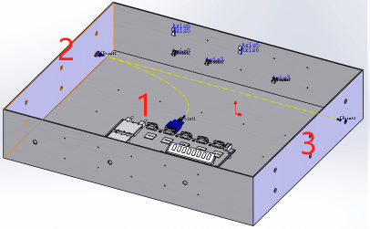
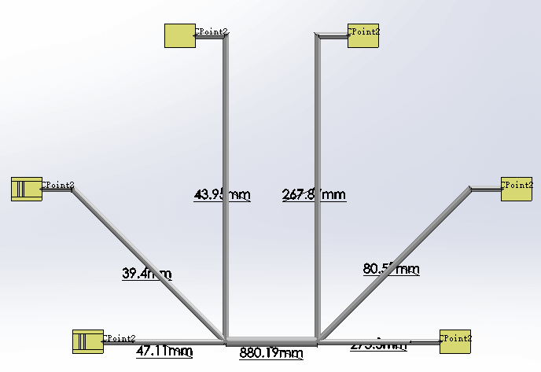
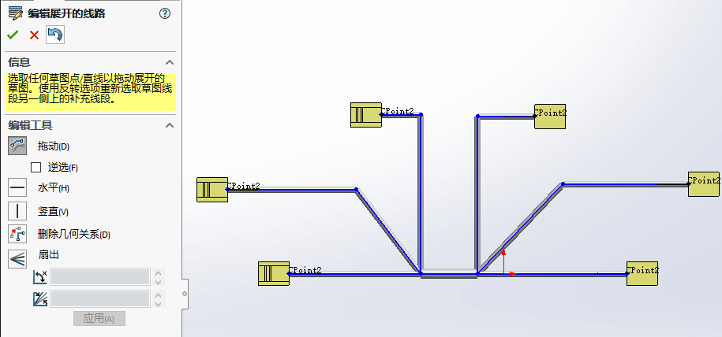
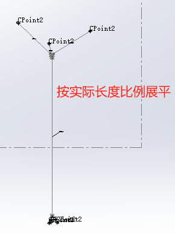
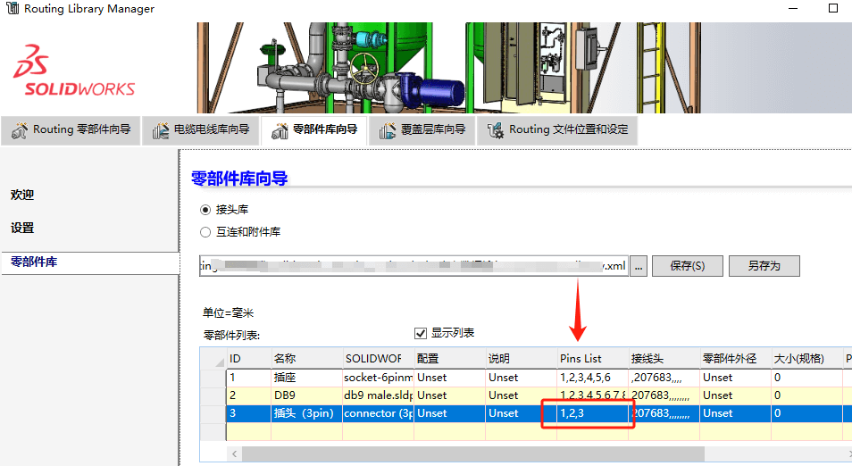
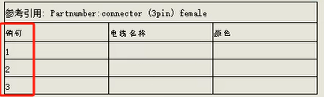

1Routing入门指南
Routing 应用程序是 SOLIDWORKS Premium 软件的一个插件。 您可以使用 Routing 生成特殊类型的子装配体，以在零部件之间创建管道、管筒、电力电缆或管线的路径。
前期知识点：3D 草图、装配体（从上至下的设计和配合）、设计库、配置（设计表）
线路部件组成：
零部件：即配件和接头，包括法兰、T 形接头、电气接头和线夹。大多数配件和接头必须有至少一个连接点 (CPoint)，指明步路段的起始位置或终止位置。
线路零件：包括管道、管筒、电线、电缆和管线。
线路特征：包含线路路径中心线的 3D 草图。
线路类型：
管道设计
软管设计
个管道和管筒零件可以具有不同尺寸和属性的配置。 例如，具有某直径的管道可以具有不同长度和厚度的多个配置。 连接点 (CPoint) 可能会指定具有此直径的管道，但是 Routing 应用程序允许您选择其它配置。
电气（电线和电缆）、电缆槽、管道和主干
线路、标准电缆和带状电缆。这些零件可以具有许多参数，包括外部直径、芯线尺寸、颜色和最小折弯半径。
电气导管
带状电缆和柔性电缆
用户定义 - 矩形和圆形横断面
设计库
线路零件的默认存放位置：
1 | C:\ProgramData\SOLIDWORKS\SOLIDWORKS 2018\design library\routing |
如果ProgramData文件夹找不到，可能是默认被隐藏了。可以在【文件夹选项-查看-显示隐藏文件、文件夹】显示
库管理器
文件位置和设定：Routing默认的库文件路径的设定。
- 【覆盖层】选择用于包住管道保护保温等作用，在选择的线条外围添加一层覆盖层实体
参考文件夹路径：用于统一管理库文件的外部文件路径参考链接，保证Routing零部件都优先使用【系统选项-文件位置-参考文件夹】内零部件。
步路设置
【系统选项-步路】设置。这些设置用于设置所有常规，管道，管道和电气的行为
按课程需要我们做如下设置操作：
- 勾选在接头/连接器落差处自动步路；
- 勾选始终为线路使用默认文档模板；
- 取消外部保存线路装配体；
- 勾选中心线尺寸；
为了方便选择布线对象，可以设置下面选项：
- 【颜色】：勾选当在装配体中编辑零件时使用指定的颜色
- 【显示/选择】：关联中编辑的装配体透明度：不透明装配体
- 【装配体】：当激活大型装配体时，取消隐藏所有基准面、基准轴、曲线、注解等
功能原理
通过对Routing零部件进行定义“连接点(CPoint)”。表示路由段(管道、管筒或电线)开始或结束。然后通过使用【自动布路】3D草图来定义路径的中心线来创建路线。
管道、管筒必须有一个路由点(RPoint)，您可以使用它来定位在路由草图中位于交叉点或端点的组件。
2基本电力线路
通过拖/放开始
启用设计库，开始拖放电气零件来布线；一般操作：
- 拖放电气零部件到装配体做配合，线路属性自动弹窗（默认不用设置，直接确定）
<img src=”Routing电气教程\2插入电气部件.png””>
- 出现自动步路，选择端头Cpoint连接点进行连接，自动生成线路草图（现在只是路径没有电线属性）。

电气特性
- 【右键路径-电气特性】查看线路属性，此时电气特性是空白的，只是单纯的布线（不带电气属性）
- 【编辑电线】添加电线命令，设置线路属性。电线的数据是来自RLM库里“电缆电线库”

【编辑电线】选择电线分配路径部件（设置后会影响线路的直径，从到清单也有电线信息）。

- 【编辑电线】从-到参数设置，例如：风扇3线分别在管道1,2,3。

- 【右键-电气特性】查看完成后的线路电气信息（左：添加电线前，右：添加电线后）。

电气特性属性和RLM的“电缆电线库”的对应关系

其他补充：
1、调整样条曲线可以修改线路，因为线路本质是3D草图里的样条曲线驱动的扫描件。
2、线路部件是以虚拟件保存在装配体中的，和前面设置的“保存外部零件有关”。虚拟件保存外部还会有保存线路部件和部件加零件的两种方式。
3线路线夹
线夹使用
在【自动步路】当前选择里，除了选择接头零件外，可以通过额外选择线夹来约束布线的走向。（完成布线后，还需【编辑电线】分配“blue，red，white”三线。）

新增线夹
设置：【系统选项-步路】勾选在线夹落差处自动步路。在编辑线路时新增线夹会自动生成步路。拖放线夹时，按住鼠标左键到配合处，通过Shift+方向键可以改变线夹方向。

修改线夹
对于需要后续修改的线路部件，我们可以通过菜单栏【电气-编辑线路】进人编辑状态或是选择步路零件【右键-编辑线路】
添加线夹，非草图编辑状态下可添加线夹到线路
旋转线夹，非草图编辑状态下可拖放和旋转线夹。【电气-旋转线夹】来修改步路过线夹后的角度。
增加线夹约束，你需要继续进入【自动步路】“重新步路样条曲线”来约束步路过线夹的连接点。

补充知识：
1、【编辑电线】修改步路线路直径后，线夹可以根据直径配置自动切换到对应配置大小；
线夹脱钩
删除线夹时，我们需要判断步路连接点是否与当前需要删除的线夹有关系。
黑色线夹的连接线，在删除时会影响布线路径的完整性，我们需要用【电气-从线夹脱钩】断开线夹连接关系

分割布线
【电气-分割线路】在已有的线路草图上点击生成分割点（jp4）。

【电气-添加中接管】可以选择上面分割线路的点作为中接位置。（默认的中接管有多个配置，教程选择的是6mm的配置）
中接管有定义好的连接点，可以参与【自动布线】的使用。

4电力线路零部件
用于自定义routing布路用的电气零部件。
接头自定义
【开始菜单-SOLIDWORKS 工具-Routing库管理器】零部件向导可以创建Routing零部件。接头定义包括如下：
1、选择类型：电气-接头
2、功能点：添加1个或多个的连接功能点，会自动切换到SW界面并开启连接点的设置属性，

3、配合参考：参考之前的装配体课程做法即可。

4、有效性检查：检查是否有遗漏项，如有将限制Routing零部件的创建。
5、设计表检查：针对系列零件可以考虑用这个设计表，做系列配置是规定（例如前面的“线夹”我们就有多种配置可选）
6、零部件属性：按需填写属性到零部件文件属性里，这里可以按照如下内容填入：
- PartNo：FC20
- Description：母接头20AWG
- Comment：快速端了连接
- Material：镀锡铜
- Manufacturer：SOLIDWORKS
7、保存零部件：保存建议默认保存到
线夹自定义
1、选择类型：电气-线夹
2、功能点：线夹的功能点是可选项，可以跳过设置
3、步路几何体：线夹轴和旋转轴

4、配合参考：参考之前的装配体课程做法即可。

5、有效性检查：检查是否有遗漏项，如有将限制Routing零部件的创建。
6、设计表检查：“线夹”配置有设计表时，可以在RLM【打开设计表】。注意：filersketch草图（过滤器草图）是一个特殊的约束草图，名称据说是固定的。包括草图尺寸的名称也需要按照下图显示来命名。

7、零部件属性：按需填写属性到零部件文件属性里，这里可以按照如下内容填入：
8、保存零部件：保存建议默认保存到
接头使用示例
选择线路连接点→自动步路→编辑电线

线夹使用示例
选择线路连接点→自动步路→编辑电线
线夹配置大小自动切换：白色单线，线夹配置为3.2mm；蓝红白3线，配置自动切换到4.8,mm。

5标准线缆和重用线路
生成标准电缆和管筒库，其信息存储在 Excel 电子表格中。用以快速生成常用标准电缆；
自定义电缆库
【RLM-文件位置和设定-标准电缆.xlx】定义了如下几个要素：有利于你快速的重用电缆。

标准电缆.xlx文件里包括如下需定义的电缆内容：
电缆名（Part number）+线路类型（Route Type）+说明（Description）：
从（From Ref）：零部件（From Part File）+零部件配置（Config）
到（To Ref）：零部件（To Part File）+零部件配置（Config）
线长（Length）+线径（Diameter)+最小折弯半径（)

注意：使用自定义步路库，会影响其他人打开你图纸的正确性。你需要确保大家在使用同一个标准文件位置的文件。

使用标准电缆
1、【电气-标准电缆】选择电缆库里的可用电缆和参数后确定（例如图中选择的：GND14-16电缆）

2、【插入零部件】会依次提示并手动选择插入的接头位置（如图接头Con1和接头Con2）
3、【自动步路】标准电缆这里的自动步路是自动生成，我们直接确认跳过即可。

补充：
1、线长已预先定义好标准长度；
2、编辑线长，检查线长的尺寸是否变化
插入标准电缆
当接头零件有变化，但是整体的电线不变时。可以在【电气-标准电缆】“从接头”和“到接头”修改零件文件

如果线缆变化，也可以修改标准电线【编辑电线-替换电线】

创建标准电缆

在添加新电缆操作界面里，填入的内容其实与excel表里面的是一样的格式。（如下图：）

创建完成后，在可用电缆处会新增一列数据，并且在Excel中也会新增数据（下图可用电缆：150mm铲性电缆）。

重用线路
重用线路可以使用现有线路创建多个相同或不同长度的线路，重用线路的设计树图标有区别与普通线路图标


重用线路分离：重用的线路，需要修改长度参数。可以在重用时，取消“保持步路长度”选项。让软件自动取长修复线路长度。
如果已经“保持步路长度”，需在线路草图编辑模式下，【右键草图-取消固定长度】的选项。

重用不同长度的线路时，可能会出现重建错误情况。或是需要分离重用标志，则可以在总装模式下，在设计树线路部件【右键-分离线路】
6电气数据输入
在前面定义的标准电缆是不带“电气特性”的。因此本章需要了解电气电缆库向导的设置使用。
用Excel管理规划放置接头的零件，Excel有清单文件、零部件、电缆电线文件；“从-到”清单是使用 SOLIDWORKS Routing 的最高效方法。
通过“从-到”清单获取数据既省去了手动输入电线数据的需求，又简化了设计生成过程，还减少了错误。
零部件库
生成新的库方式，创建接头库（Connectors Library）。零部件库从-到”清单包含：
SOLIDWORKS 文档从设计库里找“socket-6pinmindin.sldprt”，“db9 male.sldprt ”
| ID | 名称 | SOLIDWORKS 文档 | 配置 | 说明 | Pins List | 接线头 | 零部件外径 | 大小（规格） | Pins_Plugs | Pins_Seals | Pins_Miscell |
|---|---|---|---|---|---|---|---|---|---|---|---|
| 1 | 插座 | socket-6pinmindin.sldprt | 默认 | 接头 | 1,2,3,4,5,6 | 复位 | Unset | 0 | 复位 | 复位 | 复位 |
| 2 | DB9 | db9 male.sldprt | 默认 | 接头 | 1,2,3,4,5,6,7,8,9 | 复位 | Unset | 0 | 复位 | 复位 | 复位 |

电缆电线库
以Excel格式输入库方式，创建电缆电线库

课程内的Wires.xlsx电缆库内的电线颜色都是黑色，这是不合理的。我们需要按需修改下颜色。通过双击颜色进入调色板进行选择编辑。

完成编辑后，RLM会提示我们是否替换原.xlsx文件，我们选择“否”。另存为“练习用.xml”文件
手动设置库
如作为模板库，你可以将前面自定义的“电缆电线库”和“零部件库”添加到【RLM-文件设定位置】
在solid works软件使用【工具-布路-电气-“从-到”清单】，会出现如下弹出。

在【RLM-文件位置和设定】设置电气电缆零部件库和电线电缆库。或是在此处的“从-到”清单里进行设置。

在从到清单界面设置如下内容，保存完成操作。

放置清单内设置的J1，J2，J3的参考部件。【自动步路-引导线】，选择布线草图，将引导线转换到线路。
从到清单生成的电线，其【线路右键-电气特性】查看是具有电气属性的电线信息的。
重新布路，步路引导线。【自动布路-重新布路】重新调整走线，经过线夹，如图。

Excel重用库


7电气原理图
线路平展
电气平展图一般会包括如下几种工程图明细：注意虚拟件是不能被展平的。
- 电力材料表：
- 切割清单
- 接头表格：生成自定义接头表格模板 - 2021 - SOLIDWORKS 帮助
- 自动零件序号
- 其他材料材料表信息
!
注解平展
制作类型-》选择平展属性-》（编辑平展样式）-》选择输出到工程图的属性
展平平铺的样式如果不合理想，可以打开展开的线路部件，【右键-编辑展开的线路】编辑，操作和草图类似
制造平展
空间3D草图的展开，这有区别与“注解”展开的方式。将展开线路调整进到模壳板范围内？
注解平展的线路长度是不按按真实比例（图面好看），制造平展的线路长度比是按真实比例（图面真实）。
表格
Routing 电气表 PropertyManager - 2021 - SOLIDWORKS 帮助
- 电气材料明细表。 列出了零部件，包括装配体所包含的接头和电线。
- 切割清单。 列出了装配体中电线的切割长度和其它属性。
- 接头表。 列出了所选接头的针脚和相关电线。接头表格：生成自定义接头表格模板
接头表的行数会根据RLM零部件库文件里的设置决定
如果是3pin的阵脚，则接头表的行会表成3行：
8柔性电缆
柔性电缆概述
【柔性电缆】是排线，同电线类似，只是在‘自动步路’内的选项不同，且有过度的调整点
柔性电缆线路
打开装配体
插入步路库flex connector零部件→【自动步路】（这里和之前的自动步路界面有所不同了）→柔性电缆的布线草图有白色的控制点，可以类似样条曲线的调整方式修改。
柔性电缆的线路也是可以通过【自动步路】的选择，使其经过线夹。
9电气导管
电气导管概述
电线的保护管

自动电气导管
插入电气导管接头


电气导管线路属性：“使用软管”决定了是刚性直管还是柔性软管
自动步路中的正交线路
电气导管自动步路，刚性直管可以选择自动步路里的正交线路方案。
<图>
插入接头零部件
把导管里的电路【自动步路】接到接头零件上。编辑电线电缆：应用电气属性

工程图电气数据
1、步路工程视图【右键-电气表-电气材料明细表】
2、步路工程视图【右键-电气表-切割清单】
3、自动零件序号
手动草图步路
插入电气导管接头
电气导管线路属性

电气导管自动步路，编辑拖动线路，使用【草图剪裁实体】修剪使线路相连接。

手动插入弯头零部件

手动插入连接器零部件。

创建电气软管
操作一致，区别在于插入Routing部件后【线路属性】选择“使用软管”选项即可。
工具栏-电气
SOLIDWORKS 2023 - Routing | 新功能